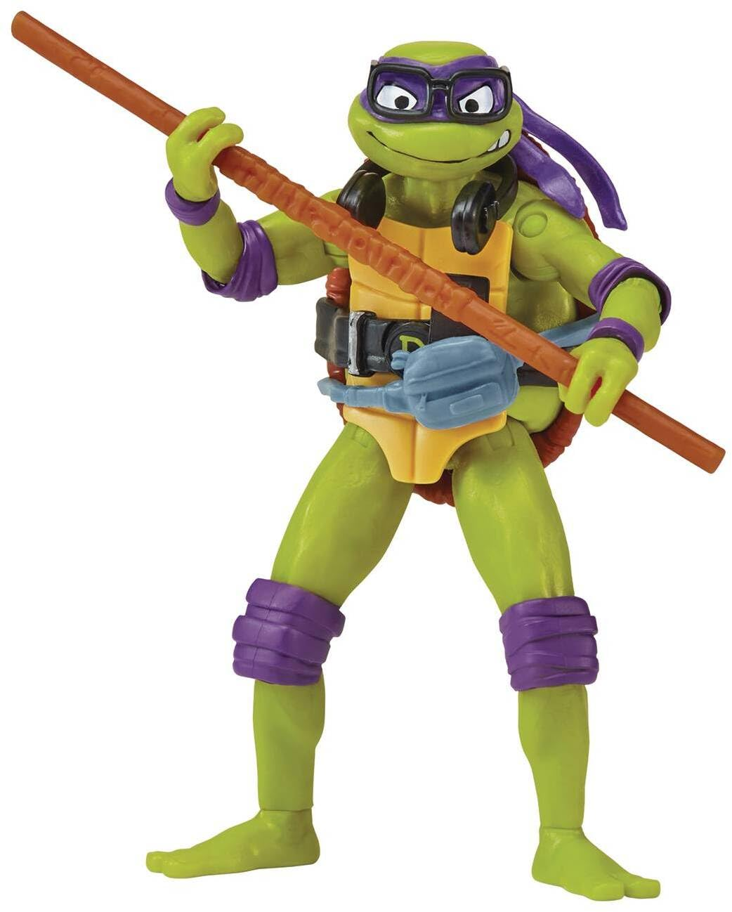

Born in Florence, Italy, in 1386 under the name Donato di Niccolò di Betto Bardi, Donatello grew up surrounded by a variety of artistic and cultural influences. Although little is known about his early education, it is thought that he started studying art at a young age. Donatello most likely acquired the fundamentals of sculpting and working with bronze during his apprenticeship with sculptor Lorenzo Ghiberti. Donatello's time with Lorenzo Ghiberti was crucial to his development as a sculptor because it gave him knowledge and expertise for his future profession. His artistic vision was also profoundly influenced by his exposure to classical antiquity and the innovative spirit of the era.
